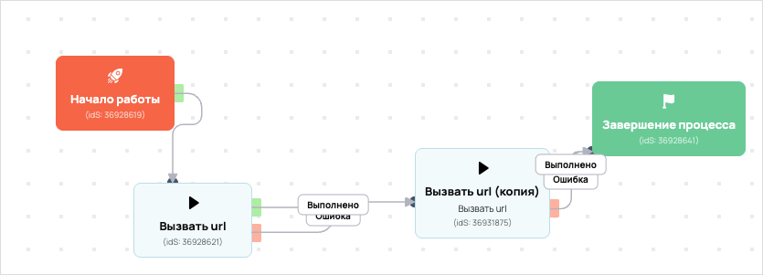

Заполнил анкету пользователь (база вакас 79863)
- ID процесса:
2130914 - Объект: Пользователи
- Статус: Не запущен
- Внутренняя страница: 2130914. Заполнил анкету пользователь (база вакас 79863)
- GetCourse: Карточка | Схема процесса
Скриншоты процесса


Коротко для заказчика
- Главное: Главное условие входа в процесс пока не удалось автоматически расшифровать.
- Дальше он передает данные как: Формы и анкеты.
- Связанных баз Vakas: 1.
Понятное описание процесса
- Процесс работает с объектом GetCourse: Пользователи. Текущий статус процесса: Не запущен.
- На вход попадают данные так: Главное условие входа в процесс пока не удалось автоматически расшифровать.
- Дополнительные условия внутри схемы не извлечены: процесс идет напрямую по основной ветке или условия не подписаны.
- Дальше процесс делает прямые вызовы Vakas: 1. Напрямую задействованы базы: 79863.
- Передача: 79863. База 79863: Формы и анкеты. Передаются параметры:
name,email,phone,getcourse_user_id,utm_source,utm_medium,utm_campaign,utm_content,utm_term,surveydata. - Что происходит в amoCRM: На входе в этап ЛИДОРУБЫ -> 2 группа [73995202] база ищет дубль и при необходимости переводит найденную сделку в рабочий этап.
Ход процесса в GetCourse
- Схема состоит из 4 блоков и 5 переходов.
- По типам: стартов 1, условий/ожиданий 0, вызовов URL 2, изменений полей 0, финалов 1.
Блоки процесса: что делают и зачем нужны:
- Блок
36928619«Начало работы» (старт). Что делает: Запускает выполнение схемы для объекта, который попал под правило входа процесса. Зачем нужен: Нужен как точка входа: от него GetCourse начинает движение объекта по схеме. Дальше: если результат «Выполнено», идет в «Вызвать url». - Блок
36928621«Вызвать url» (вызов URL). Что делает: Передает в Vakas: 79863. База 79863, канал «Формы и анкеты» (POST); параметры:name,email,phone,getcourse_user_id,utm_source,utm_medium,utm_campaign,utm_content,utm_term,surveydata; timeout 10 сек. Зачем нужен: Нужен, чтобы передать подходящий объект в 79863. База 79863; дальше На входе в этап ЛИДОРУБЫ -> 2 группа [73995202] база ищет дубль и при необходимости переводит найденную сделку в рабочий этап. Дальше: если результат «Ошибка», идет в «Вызвать url (копия)»; если результат «Выполнено», идет в «Вызвать url (копия)». - Блок
36931875«Вызвать url (копия)» (вызов URL). Что делает: Пишет событие в n8n: event не указан (POST); параметры:name,phone; timeout 10 сек. Зачем нужен: Нужен для служебной фиксации результата работы процесса во внешнем сценарии n8n. Дальше: если результат «Ошибка», идет в «Завершение процесса»; если результат «Выполнено», идет в «Завершение процесса». - Блок
36928641«Завершение процесса» (завершение). Что делает: Завершает ветку процесса после выполненных проверок и действий. Зачем нужен: Нужен, чтобы закрыть текущую ветку и не гонять объект по процессу повторно. Дальше переходов нет: это конечная точка ветки.
Что именно входит в процесс
- Главное условие входа в процесс пока не удалось автоматически расшифровать.
Как именно настроено правило
Дополнительные условия не извлечены.
Куда и как передается дальше
| База Vakas | Что передается | Этап в amoCRM | Что происходит со сделкой |
|---|---|---|---|
| 79863. База 79863 | Формы и анкеты | ЛИДОРУБЫ -> 2 группа [73995202] | На входе в этап ЛИДОРУБЫ -> 2 группа [73995202] база ищет дубль и при необходимости переводит найденную сделку в рабочий этап. |